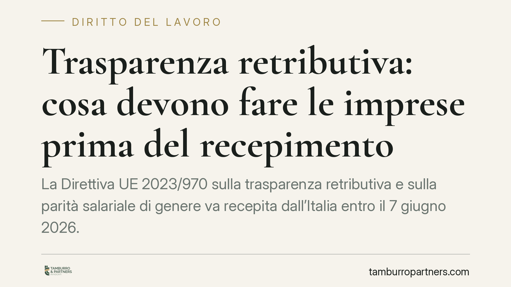

Trasparenza retributiva: cosa devono fare le imprese prima del recepimento
La Direttiva UE 2023/970 sulla trasparenza retributiva e sulla parità salariale di genere va recepita dall'Italia entro il 7 giugno 2026. Molte imprese arrivano impreparate agli obblighi di reportistica, scaglionati per dimensione aziendale dal 2027. Intanto alcune prassi di selezione, come la richiesta dello storico retributivo al candidato, sono destinate a diventare illegittime. Conviene prepararsi ora.

Il quadro: una direttiva da recepire entro giugno 2026
La Direttiva (UE) 2023/970 del Parlamento europeo e del Consiglio del 10 maggio 2023 rafforza l'applicazione del principio della parità di retribuzione tra uomini e donne per lavoro uguale o di pari valore, attraverso la trasparenza retributiva e meccanismi di applicazione.
Gli Stati membri devono recepirla nel diritto interno entro il 7 giugno 2026 (art. 34 della direttiva). Alla data di redazione di questo contributo il decreto legislativo italiano di attuazione non risulta ancora pubblicato in Gazzetta Ufficiale. Per questa ragione parliamo degli obblighi come derivanti dalla direttiva, in attesa della norma nazionale che ne definirà numero, data e dettagli applicativi.
Una precisazione utile: anche una direttiva non ancora recepita produce effetti sul piano interpretativo e orienta le scelte organizzative prudenti. Attendere il decreto per iniziare ad adeguarsi significa comprimere i tempi.
Cosa cambia: trasparenza prima e durante il rapporto
La direttiva interviene su due fronti.
Il primo riguarda la fase di selezione. Il candidato ha diritto di conoscere la retribuzione iniziale, o la relativa fascia, prima del colloquio o comunque prima dell'assunzione (art. 5). Specularmente, il datore di lavoro non può chiedere al candidato lo storico delle sue retribuzioni presso precedenti rapporti. È una prassi ancora diffusa, destinata a diventare illegittima.
Il secondo fronte riguarda il rapporto in corso: diritto del lavoratore a ricevere informazioni sui criteri di determinazione della retribuzione e della progressione, criteri che devono essere oggettivi e neutri sotto il profilo del genere (artt. 6 e 7).
Gli obblighi di reportistica: soglie e calendario
Qui la distinzione temporale è decisiva. Gli obblighi di comunicazione sul divario retributivo di genere entrano a regime per fasi, in base al numero di dipendenti (art. 9 della direttiva):
- Imprese con almeno 250 dipendenti: prima comunicazione entro il 7 giugno 2027, poi con cadenza annuale.
- Imprese da 150 a 249 dipendenti: prima comunicazione entro il 7 giugno 2027, poi ogni tre anni.
- Imprese da 100 a 149 dipendenti: prima comunicazione entro il 7 giugno 2031, poi ogni tre anni.
Sotto i 100 dipendenti non è previsto l'obbligo periodico di comunicazione, ferme restando le regole su trasparenza in selezione e parità di trattamento.
Quando il divario retributivo medio tra generi supera il 5% in una categoria di lavoratori e non è giustificato da criteri oggettivi e neutri, scatta la valutazione retributiva congiunta con i rappresentanti dei lavoratori.
L'inversione parziale dell'onere della prova
È l'aspetto che ha il maggiore impatto difensivo. In caso di contenzioso per discriminazione retributiva, se il lavoratore porta elementi da cui si può presumere una discriminazione, spetta al datore di lavoro dimostrare che non vi è stata violazione del principio di parità (art. 18).
In pratica: l'azienda che non ha documentato criteri oggettivi di inquadramento e progressione parte svantaggiata. La difesa non si improvvisa in giudizio, si costruisce prima, nei sistemi di classificazione e nelle policy retributive.
Cosa è già opportuno fare oggi
Indipendentemente dai tempi del decreto nazionale, due comportamenti vanno riconsiderati subito nei processi di selezione:
- Smettere di chiedere ai candidati lo storico retributivo.
- Indicare la retribuzione iniziale o la fascia retributiva già negli annunci o prima del colloquio.
Sono misure a costo zero che riducono il rischio futuro e migliorano la posizione dell'impresa.
Cosa fare in concreto
- Mappate la struttura retributiva: raccogliete i dati per categoria e genere, individuate eventuali divari e ricostruitene le ragioni.
- Formalizzate criteri oggettivi di inquadramento, aumenti e progressione, verificabili e neutri rispetto al genere.
- Rivedete i processi di selezione: eliminate la richiesta dello storico retributivo e predisponete l'indicazione della fascia retributiva.
- Collocatevi nel calendario: verificate la vostra soglia dimensionale per sapere se e quando scatterà l'obbligo di comunicazione.
- Documentate tutto: conservate le motivazioni delle scelte retributive, in vista dell'onere probatorio che graverà sull'azienda.
In caso di gruppi societari o di organici prossimi alle soglie, consigliamo una verifica preliminare per definire il perimetro degli obblighi.
Disclaimer
Contributo informativo a cura di Tamburro & Partners - Avv. Giuseppe Tamburro. Non costituisce parere legale.
Ogni storia di lavoro ha i suoi tempi.
Se gestisci HR e vuoi un confronto su contenzioso, ispezioni o licenziamenti, scrivi allo studio. Ti rispondiamo entro un giorno lavorativo.